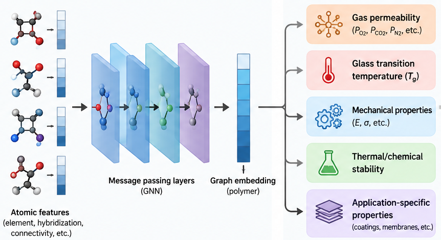
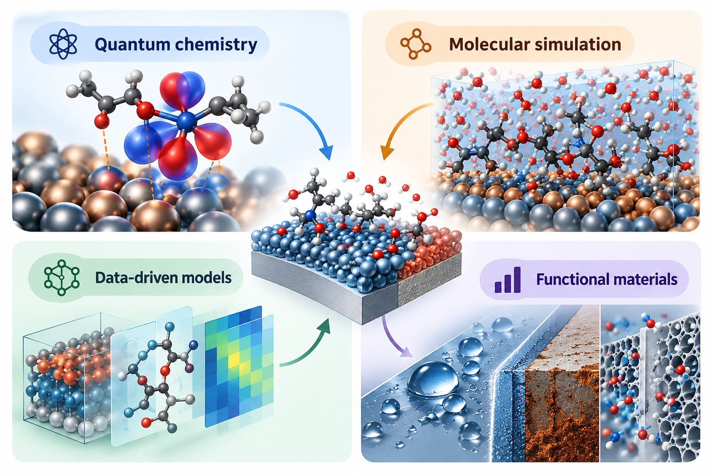
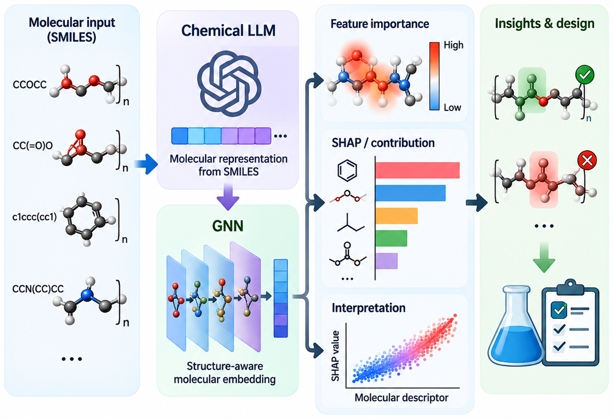

01
AI & Cheminformatics
Machine learning, graph neural networks, multitask learning, molecular descriptors, explainable AI, and uncertainty-aware prediction.
Computational Chemistry · Cheminformatics · Materials AI
Gerardo M. Casanola-Martin, Ph.D. · North Dakota State University
I develop interpretable artificial intelligence and multiscale computational approaches for polymers, functional materials, molecular discovery, and chemical safety.
Research program
My research combines chemical knowledge with machine learning and molecular modeling to build predictive, interpretable, and experimentally useful models across molecular and materials systems.
Machine learning, graph neural networks, multitask learning, molecular descriptors, explainable AI, and uncertainty-aware prediction.
Polymer informatics, permeability, coatings, glass-transition behavior, interfaces, multicomponent materials, and safer materials design.
Density functional theory, molecular dynamics, adsorption, surfaces and interfaces, photophysical systems, and molecular simulation.
Featured research

Interpretable and graph-based learning approaches connecting polymer chemistry, conditions, and transport or thermophysical properties.

Combining quantum chemistry, molecular simulation, and data-driven models to understand chemistry across electronic and molecular scales.

Models that go beyond prediction to identify chemically meaningful structure–property relationships and support experimental decisions.
Selected work
Macromolecules · Explainable machine learning for polymer transport properties.
Journal of Hazardous Materials · Interpretable computational toxicology.
SoftwareX · Molecular representations for multicomponent chemical systems.
Communications Chemistry · Data-driven polymer property prediction.
Profile
I am a Research Associate in Coatings and Polymeric Materials at North Dakota State University. Across more than 15 years of research, I have worked at the intersection of cheminformatics, materials science, computational chemistry, machine learning, and scientific software, with an emphasis on reproducible models that generate testable chemical insight.
I welcome collaborations at the intersection of chemistry, materials science, artificial intelligence, and molecular simulation—particularly projects where computational models can guide experiments, materials design, or candidate selection.